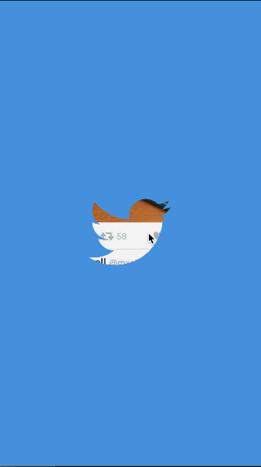
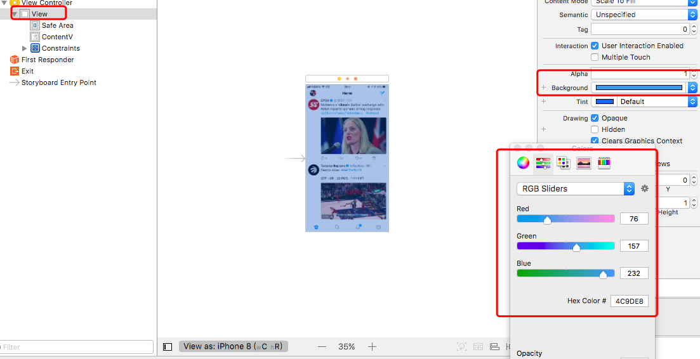
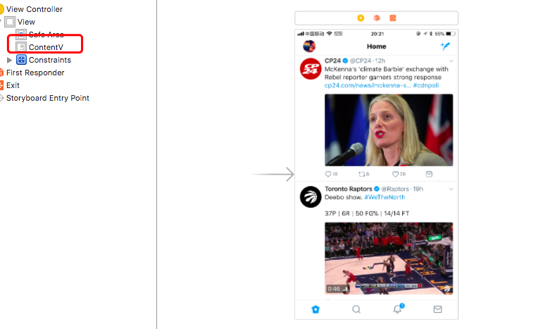
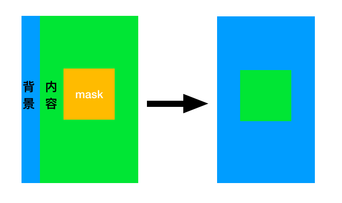
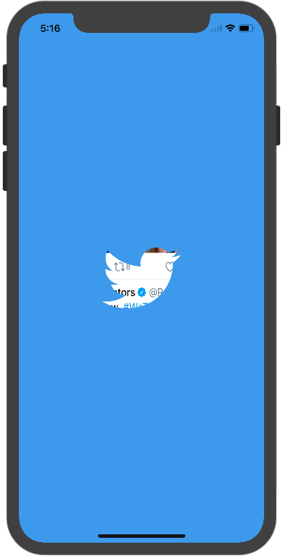

很久之前看到过推特的启动动画感觉比较炫酷，趁最近比较闲的情况下写了个demo。
观察上图我们可以发现推特图标部分透明，推特图标先缩小再放大至全屏
背景
实现推特图标透明和动画前，我们先把背景弄一下吧
推特的主界面这里就先用一张图标代表，实际项目中自己再实现具体逻辑吧
Main.storyboard中使用UIImageView充当内容view并设置背景view的颜色


推特图标
透明推特图标的实现主要是设置CALayer的mask图层。
需要用到的API：
| CALayer | 描述 |
|---|---|
| mask | 被mask的图层以mask图层的非透明部分显示 |

1 | class ViewController: UIViewController { |
效果如下：

动画
既然是多个动画顺序执行，那么这边就使用CAKeyframeAnimation帧动画的形式进行构建
缩小动画呈现的是慢进慢出的效果并且整体动画有个延迟执行。
慢进慢出：kCAMediaTimingFunctionEaseInEaseOut
延迟执行：anim.beginTime = CACurrentMediaTime() + 0.5
1 | let anim = CAKeyframeAnimation(keyPath: "transform.scale") |
放大动画呈现慢出效果
values添加放大的值
timingFunctions添加kCAMediaTimingFunctionEaseOut
1 | let end = screenH / min(maskLayer.w(), maskLayer.h()) * 3 |
动画完成移除推特图标
1 | extension ViewController:CAAnimationDelegate { |
整体代码
1 | // |